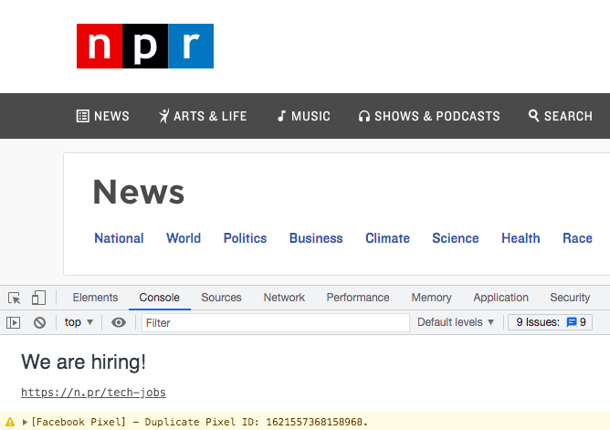

DIG 245 View Source
Viewing the Source Code
- Open Google Chrome
- Use the search bar to navigate to google.com
- Control click (or right click) anywhere on the site
- Select 'View Page Source'
My Favorite Animal

Three possibilites with Dev Tools
- Inspect the styles attached to an element and edit them within the browser
- Edit code in the filesystem (Sources -> Filesystem) to edit and save new code within your browser
- Click the arrow in the top left to enable a feature that allows you to hover over an element and see its corresponding code
New metaphor: pulling out the microscope. You put the code under the microscope to see what creates the HTML output you are viewing.
Interesting Console Content
NPR posts a link to their tech jobs in their console. Visit this site to see for yourself.
